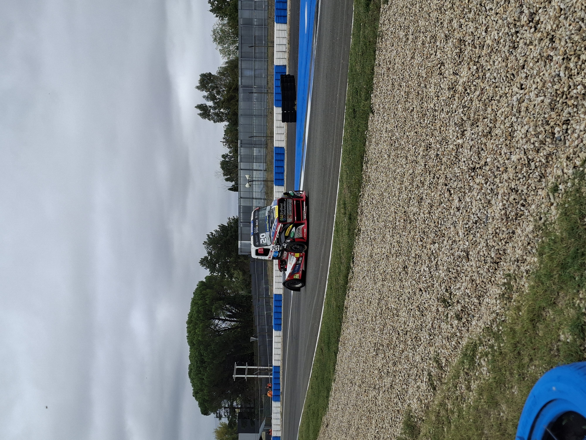

Commissaire de piste international FFSA & FFM



9 - 10 Octobre
29 - 30 Août
25 - 26 Juillet
19, 20 & 21 Juin
23 - 24 Mai
8 Mai
2 - 3 Mai
18 - 19 Avril
28 - 29 Mars
27 Juin
20 - 21 Avril
17 Avril
4 - 6 août
16 - 18 juin
19 - 21 Mai
12 - 14 Mai
15 - 16 avril